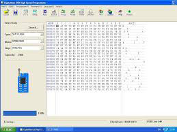
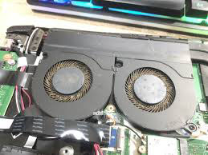
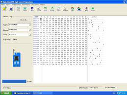
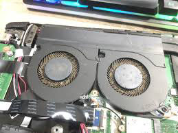

Layanan Kami
Install Ulang Windows
Rp100.000
Termasuk driver dan software dasar
Bersihkan Virus
Rp80.000
Scan & removal virus/malware
Perbaikan Mati Total
Mulai Rp150.000
Diagnosa & perbaikan hardware
Upgrade SSD/RAM
Rp50.000 (jasa)
Bantu pemilihan komponen
Servis Panggilan
+Rp30.000
Teknisi datang ke lokasi
Data Recovery
Mulai Rp200.000
Penyelamatan data penting
Keunggulan Kami
Respon Cepat
Teknisi kami siap datang dalam waktu 1-2 jam setelah booking
Bergaransi
Garansi 30 hari untuk semua jenis perbaikan yang kami lakukan
Teknisi Profesional
Ditangani oleh teknisi bersertifikat dan berpengalaman
Harga Transparan
Tidak ada biaya tersembunyi, survey gratis
Testimoni Pelanggan
"Laptop saya mati total, teknisi Baoh bisa perbaiki dalam 1 jam. Harga juga reasonable!"
- Rudi, Jakarta Selatan
"Pelayanan ramah dan profesional. Datang tepat waktu sesuai janji. Recommended!"
- Sari, Tangerang
"Berhasil recover data penting saya yang terhapus. Prosesnya cepat dan aman."
- Budi, Bekasi
Galeri Pekerjaan Kami
 




Pertanyaan Umum
Berapa lama waktu perbaikan?
Kebanyakan perbaikan bisa selesai dalam 1-2 jam di tempat. Untuk kasus yang lebih kompleks mungkin membutuhkan waktu lebih lama dan kami akan beri tahu estimasinya.
Apakah ada garansi?
Ya, semua perbaikan kami berikan garansi 30 hari. Jika ada masalah yang sama dalam periode tersebut, kami akan perbaiki kembali tanpa biaya.
Wilayah layanan dimana saja?
Kami melayani seluruh area Jakarta, Tangerang, Bekasi, Depok, dan sekitarnya. Untuk daerah lain bisa dinegosiasikan dengan tambahan biaya transport.
Hubungi Kami
Lokasi Kami
Jl. Contoh No. 17B, Jakarta Selatan
Jam Operasional
Senin - Sabtu: 08.00 - 18.00 WIB
Minggu: 10.00 - 15.00 WIB